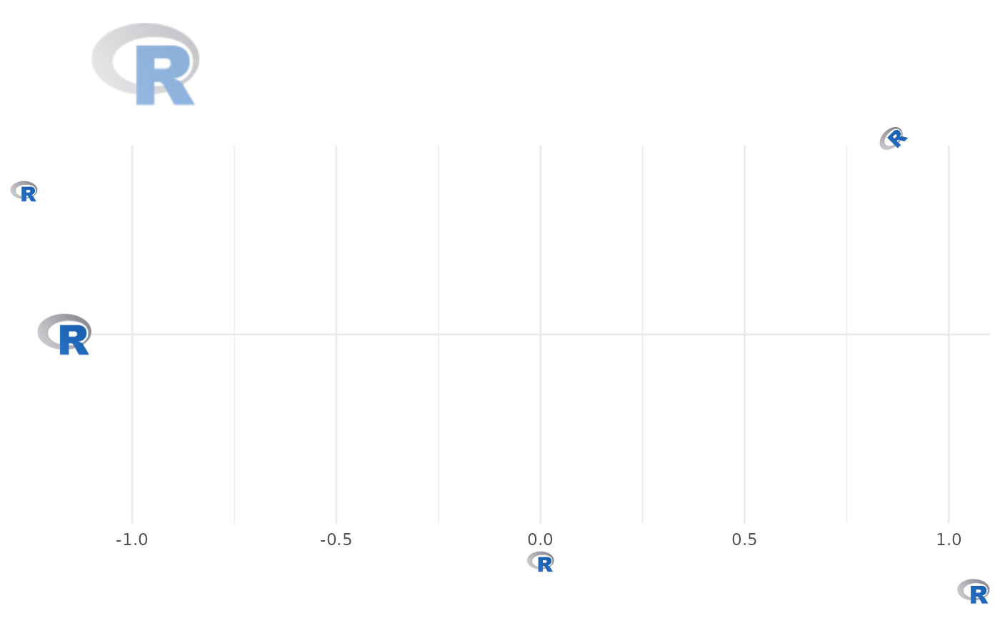

In conjunction with the ggplot2::theme() system, the element_ functions
specify the display of how non-data components of a ggplot are drawn. Both
functions call magick::image_read() to process image files from valid image
URLs, local paths, raster objects, or bitmap arrays.
element_path(): draws images as replacement forggplot2::element_text(). Use this to replace text with images.element_raster(): draws images as replacement forggplot2::element_rect(). Use this to put images in plot background.
Usage
element_path(
alpha = NULL,
colour = NA,
hjust = NULL,
vjust = NULL,
color = NULL,
angle = NULL,
size = 0.5
)
element_raster(
image_path,
x = grid::unit(0.5, "npc"),
y = grid::unit(0.5, "npc"),
width = grid::unit(1, "npc"),
height = grid::unit(1, "npc"),
just = "centre",
hjust = NULL,
vjust = NULL,
interpolate = TRUE,
default.units = "npc",
name = NULL,
gp = NULL,
vp = NULL
)Arguments
- alpha
The alpha channel, i.e. transparency level, as a numerical value between 0 and 1.
- colour, color
The image will be colorized with this color. Use the special character
"b/w"to set it to black and white. For more information on valid color names in ggplot2 see https://ggplot2.tidyverse.org/articles/ggplot2-specs.html?q=colour#colour-and-fill.- hjust
A numeric vector specifying horizontal justification. If specified, overrides the
justsetting.- vjust
A numeric vector specifying vertical justification. If specified, overrides the
justsetting.- angle
The angle of the element as a numerical value between 0° and 360°.
- size
The output grob size in
cm(!).- image_path
A file path, url, raster object or bitmap array. See
magick::image_read()for further information.- x
A numeric vector or unit object specifying x-location.
- y
A numeric vector or unit object specifying y-location.
- width
A numeric vector or unit object specifying width.
- height
A numeric vector or unit object specifying height.
- just
The justification of the rectangle relative to its (x, y) location. If there are two values, the first value specifies horizontal justification and the second value specifies vertical justification. Possible string values are:
"left","right","centre","center","bottom", and"top". For numeric values, 0 means left alignment and 1 means right alignment.- interpolate
A logical value indicating whether to linearly interpolate the image (the alternative is to use nearest-neighbour interpolation, which gives a more blocky result).
- default.units
A string indicating the default units to use if
x,y,width, orheightare only given as numeric vectors.- name
A character identifier.
- gp
An object of class
"gpar", typically the output from a call to the functiongpar. This is basically a list of graphical parameter settings.- vp
A Grid viewport object (or NULL).
Details
To be able to use the functions correctly, a basic understanding of how they work is required.
element_path() can be applied wherever ggplot2::element_text() is
usually used. It replaces text with an image if the text is a valid image
file location or data.
element_raster() can be applied wherever ggplot2::element_rect() is
usually used. A path in the sense of magick::image_read() must be explicitly
specified here because it cannot read plot data. It is designed exclusively
for inserting an image into the background of a plot and calls
grid::rasterGrob() internally.
Neither width nor height need to be specified, in which case, the aspect
ratio of the image is preserved. If both width and height are specified,
it is likely that the image will be distorted.
Examples
library(ggplot2)
library(ggpath)
# compute paths of R logo file and background image file shipped with ggpath
local_r_logo <- system.file("r_logo.png", package = "ggpath")
local_background_image <- system.file("example_bg.jpg", package = "ggpath")
# create dataframe with x-y-coordinates and the above local path
plot_data <- data.frame(x = c(-1, 1), y = 1, path = local_r_logo)
# Replace title, subtitle, the caption, axis labels as well as y-axis text
# the the local image
ggplot(plot_data, aes(x = x, y = local_r_logo)) +
theme_minimal() +
labs(
title = local_r_logo,
subtitle = local_r_logo,
x = local_r_logo,
y = local_r_logo,
caption = local_r_logo
) +
theme(
plot.caption = element_path(hjust = 1, size = 0.6),
axis.text.y = element_path(size = 1),
axis.title.x = element_path(),
axis.title.y = element_path(vjust = 0.9),
plot.title = element_path(hjust = 0, size = 2, alpha = 0.5),
plot.subtitle = element_path(hjust = 0.9, angle = 45),
)

# Use local image as plot background
ggplot(plot_data, aes(x = x, y = y)) +
geom_from_path(aes(path = path), width = 0.2) +
coord_cartesian(xlim = c(-2, 2)) +
theme_dark() +
theme(
plot.background = element_raster(local_background_image),
panel.background = element_rect(fill = "transparent")
)